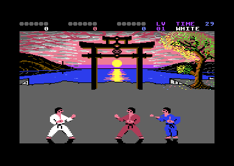
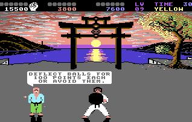

<meta charset="utf-8">
<meta name="viewport" content="width=device-width, initial-scale=1">
<title>IK+</title>
<link rel="preconnect" href="https://fonts.googleapis.com">
<link rel="stylesheet" href="https://fonts.googleapis.com/css2?family=Lato:wght@400;700;900&family=IBM+Plex+Mono:wght@400;500&display=swap">
<link rel="stylesheet" href="reference/ik-plus-page.css">
<!-- tabs -->
<header class="hero">
  <p class="eyebrow">1987 · System 3</p>
  <h1>IK+</h1>
  <p class="sub">Three karateka share one floor, and the C64 draws only two of them with sprites. The third is built from the floor's own characters and moves two pixels at a time, which is how the pause can stand five fighters in a row.</p>
</header>
<main class="wrap">

<section>
  <p class="fig">01 · The game</p>
  <h2 class="t">The game</h2>
  <p>IK+ puts three karateka on one floor. Player one fights in white and player two in red, and the computer takes every fighter nobody is playing. A hit scores a full point (two dots) or a half point (one dot), depending on which way the two fighters face, and between 100 and 1,000 points by the blow.</p>
  <p>A round ends when a fighter has six dots or the clock runs down from 30, and a human who comes last alone drops out of the game. Every third round is a bonus round: one fighter with a shield deflects balls thrown from both sides. A judge stands in the widest gap between the fighters and comments in a speech bubble.</p>
  <div class="plate"><div class="ik-pics">
    
    
  </div><p class="cap">Left: the first round of a one-player game, in the emulator. Right: the bonus round, from the C64-Wiki.</p></div>
  <p>The <a href="fighters.html">Fighters</a> tab has the moves, every pose the fighters are drawn in, the points and how the computer's fighters improve. The <a href="sound.html">Sound</a> tab plays Rob Hubbard's tune and the six digitised shouts.</p>
</section>

<section>
  <p class="fig">02 · One frame</p>
  <h2 class="t">One frame, rebuilt from memory</h2>
  <p class="lede">The picture below is drawn by this page from the game's memory, the way the video chip draws it, line by line.</p>
  <div class="plate">
    <div class="ik-row"><button type="button" class="ik-btn" id="ik-splits" aria-pressed="false">Show where the screen changes mode</button></div>
    <div class="ik-frame"><canvas id="ik-frame" width="384" height="272" role="img" aria-label="A frame of a fight drawn from the game's memory"></canvas></div>
    <p class="cap">A frame of a one-player fight, recorded in the emulator with every write to the video chip and the line it happened on, then drawn by <code>site/lib/c64.js</code>. All 104,448 pixels match the emulator's own picture of the same frame. The button marks the lines where the frame interrupts change the screen's mode, memory or background colour.</p>
  </div>
  <p>The screen is three screens stacked. Rows 0 and 1, the scores, the dots and the clock, are text in a character set of their own. From line 66 the arena is a multicolour bitmap: the sky, the torii gate, the tree in blossom and the sun going down over the bay. Inside the bitmap two more interrupts change the background colour, the one colour every cell shares: pink for the sky, purple from line 121 at the horizon and blue from line 128 for the sea. At line 162 the screen switches back to text for the floor, in a second character set that holds the judge, the speech bubble's letters and the third fighter. A chain of raster interrupts makes the switches, and the frame interrupt, an NMI from CIA 2's timer timed to one PAL frame (<code>$0BE6</code>), restarts the chain each frame.</p>
  <p>Two fighters are sprites, each three sprites wide, with the six hardware sprites used again in three bands down the fighters' height (<code>$1551</code>). The third is drawn in the floor's characters (<code>$4042</code>), so it moves two pixels at a time with the floor's fine scroll and needs no sprites at all. Each fighter's feet are reflected in the floor as a one-colour silhouette: the sprite fighters' in the lower rows of their lowest sprites (<code>$F150</code>), the third fighter's in characters (<code>$F1F9</code>). The floor has two screens, and each step is drawn into the one not on view before the two swap, so the third fighter is never seen half drawn.</p>
</section>

<section>
  <p class="fig">03 · The judge</p>
  <h2 class="t">The judge says “is out” only to a human</h2>
  <p class="lede">At the end of each round the judge sums it up in his speech bubble. A computer fighter that comes last is told to improve. A human player who comes last alone is told they are out, because the game is over for them.</p>
  <div class="plate">
    <div class="ik-row">
      <div class="pick"><button type="button" class="step" id="ik-mprev" aria-label="Previous message">&#8249;</button><select id="ik-msel" aria-label="Message"></select><button type="button" class="step" id="ik-mnext" aria-label="Next message">&#8250;</button></div>
      <select id="ik-places" aria-label="Who placed first, second and third"></select>
    </div>
    <div class="ik-bubble">
      <canvas id="ik-bub" width="160" height="24" role="img" aria-label="The judge's speech bubble"></canvas>
      <div class="ik-out" id="ik-mout" aria-live="polite"></div>
    </div>
    <div class="ik-scroll" style="margin-top:18px"><table class="ik-tbl ik-msgs" id="ik-msgs"></table></div>
    <p class="cap">Every message in the game, drawn by a port of its own printing routine (<code>$38BF</code>): each letter is a five-line glyph from the font at <code>$7000</code>, inverted into a column of three characters (<code>$39C6</code>), and doubled in height between the codes <code>$9A</code> and <code>$9E</code>. The bubble's width comes from <code>$3863</code> and its rounded ends from <code>$3A03</code>; the names are the game's own (<code>$3473</code>). The time bonus is drawn for 12 seconds left. When each message appears is read from the code that asks for it.</p>
  </div>
  <p>The game ranks the three fighters by points, notes which of them are level and which places the humans took, and looks the combination up in a table of 28 bytes (<code>$11AC</code>). The high half of the byte is the message; the low three bits say who plays on. A human who comes last alone is out. In a tie for last nobody is, and when all three are level everyone plays on and the judge says so. When a computer fighter comes last instead, the judge has a kinder word for it: “COME ON”, “MUST IMPROVE” or “COULD DO BETTER”.</p>
  <p>In the attract mode's demo fights nobody is human, and the judge shows one of eight hints instead, picked at random (<code>$1286</code>). The pick is a number from 1 to 16 in a table that starts at 0 (<code>$11C8</code>), so the table's first entry, message 10, never appears: “IS BEST / IS SECOND / IS WORST”. Neither do messages 23, 24 and 28, which read “SPARE BUBBLE”. Two players who tie for second without touching their joysticks all round are both dropped, and get a hint too (<code>$12DF</code>).</p>
</section>

<section>
  <p class="fig">04 · The bonus round</p>
  <h2 class="t">The bonus round</h2>
  <p class="lede">In the bonus round 64 balls fly in from both sides, and the player deflects them with a shield for 100 points each. Some rounds throw flashing balls that bounce low and high in turn.</p>
  <div class="plate">
    <div class="pick"><button type="button" class="step" id="ik-bprev" aria-label="Previous bonus round">&#8249;</button><select id="ik-bsel" aria-label="Bonus round"></select><button type="button" class="step" id="ik-bnext" aria-label="Next bonus round">&#8250;</button></div>
    <div class="ik-slots" id="ik-slots"></div>
    <p class="ik-mono" id="ik-bout"></p>
    <p class="cap">Which of the six throwing slots throw flashing balls in each bonus round of eight (<code>$F71D</code>, by the bonus count AND 7), and where the launch rate stops growing (<code>$F725</code>).</p>
  </div>
  <p>A bonus round goes to each human player in turn (<code>$F2AB</code>). Balls come faster as the round goes on: the launch rate starts at <code>$0080</code> and grows by 8 a ball up to the round's limit, and each ball is heavier than the last, up to a limit. A ball that reaches the fighter knocks the shield out of his hands. Surviving all 64 balls is worth 5,000 points.</p>
</section>

<section id="keys">
  <p class="fig">05 · The keyboard</p>
  <h2 class="t">Every key that changes the background</h2>
  <p class="lede">The asterisk and two three-key combinations repaint the arena, and no other key touches it: <kbd>*</kbd> recolours the sun’s reflection, <kbd>D</kbd> <kbd>O</kbd> <kbd>M</kbd> together the sky and the sea, and <kbd>R</kbd> <kbd>T</kbd> <kbd>X</kbd> together change how the reflection ripples. Press them below, or on your own keyboard.</p>
  <div class="plate">
    <div class="ik-scene"><canvas id="ik-scene" width="320" height="96" role="img" aria-label="The arena above the floor, drawn live: sky, sea and the sun's reflection"></canvas></div>
    <div class="ik-row ik-keys" style="margin-top:12px">
      <button type="button" class="ik-key" id="ik-k0"><span class="ik-caps"><kbd>*</kbd></span><span class="ik-kl">the reflection</span><span class="ik-kn" id="ik-k0n"></span></button>
      <button type="button" class="ik-key" id="ik-k1"><span class="ik-caps"><kbd>D</kbd><kbd>O</kbd><kbd>M</kbd></span><span class="ik-kl">sky and sea</span><span class="ik-kn" id="ik-k1n"></span></button>
      <button type="button" class="ik-key" id="ik-k2"><span class="ik-caps"><kbd>R</kbd><kbd>T</kbd><kbd>X</kbd></span><span class="ik-kl">the ripple’s drift</span><span class="ik-kn" id="ik-k2n"></span></button>
    </div>
    <div class="ik-row">
      <button type="button" class="ik-btn" id="ik-srun" aria-pressed="true">Moving</button>
      <button type="button" class="ik-btn" id="ik-slapse" aria-pressed="false">Time-lapse the drift</button>
    </div>
    <div class="ik-joywrap">
      <canvas id="ik-zoom" class="ik-zoom" width="360" height="160" role="img" aria-label="The sun's reflection, enlarged"></canvas>
      <div class="ik-out"><div id="ik-kout"></div><p class="ik-kn" id="ik-knext"></p></div>
    </div>
    <p class="cap">The recorded frame of section 02, cropped to the arena and drawn again 25 times a second, with the background colours and the reflection's colours the keys set, and the sun's reflection and its five glints moved by a port of the game's own code (<code>antics_step</code>, <code>$7571</code>). Run against the original in the kit's 6502 simulator, the port wrote the same bytes over 4,000 steps, through every drift pattern. The creatures are left out. Time-lapse brings the drift every 64 frames instead of every 512. Below the arena, the sun's reflection four times larger.</p>
  </div>
  <div class="plate"><div class="ik-scroll"><table class="ik-tbl ik-sets" id="ik-sets"></table></div><p class="cap">Every set each combination steps through, in order, from the game's tables (<code>$178B</code>-<code>$17A2</code>, <code>$7639</code>). The game starts on the first of each, so the first press shows the second. Choose a row to see it above.</p></div>
  <p>The keyboard is read in three places: <code>read_keys</code> (<code>$17AD</code>), run by the frame interrupt every frame, which answers every key in the table below; the RUN/STOP check (<code>$116D</code>); and the check for S and E (<code>$1C54</code>). Of all the keys they answer, only the asterisk and the two combinations write anything the arena is drawn from. A combination acts once it has been held for twelve frames, and steps on again while it is held.</p>
  <p><kbd>*</kbd> steps through four colourings of the sun’s reflection (<code>$1807</code>). The reflection is two sprites with one shape, behind the picture: sprite 7 stretched to double width and sprite 6 inside it. Two raster interrupts colour them, one at line 121 for the rows above the water’s middle line (<code>$0AE8</code>) and one at line 134 for the rows below (<code>$0B27</code>), so each set is four colours (<code>$FD54</code>-<code>$FD57</code>).</p>
  <p><kbd>D</kbd> <kbd>O</kbd> <kbd>M</kbd> steps through eight pairs of sky and sea (<code>$1837</code>, <code>$179B</code>). Each is one byte, the sky’s colour in its low four bits and the sea’s in its high four (<code>$F3</code>, <code>$F4</code>): four skies, light red, light blue, cyan and blue, over a blue sea, then the same four over a red one. They are the background colour of the bitmap, which raster interrupts set at line 67 for the sky (<code>$0A85</code>) and line 128 for the sea (<code>$0B10</code>); the purple band at the horizon stays purple.</p>
  <p><kbd>R</kbd> <kbd>T</kbd> <kbd>X</kbd> changes how the reflection moves (<code>$1855</code>). The C64-Wiki gives D, O and M, and the untouched high-score table spells out a hint that names the asterisk and ends “and others”; none of them names this combination. Every other frame each of the reflection’s 21 rows takes one step along a wave (<code>$7571</code>): each row has a phase (<code>$BEA0</code>) that picks how far its slice of the reflection is shifted (<code>$72F3</code>), so the ripple slides down the rows. Once every 512 frames, about ten seconds, the drift (<code>$7649</code>) nudges the rows’ phases, a step for each row from a set of four repeated down the rows. The key combination picks the set (<code>$7639</code>, through the operand at <code>$7665</code>): the game starts on −1, +1, −1, −1, and the other three are +2, −4, +6, −2; +2, −2, +1, −1; and −1, +1, +3, −3. In the emulator R, T and X stepped it, and so did P, O and N.</p>
  <p>Each combination is any one key from each of three groups, because both three-key checks drive three keyboard rows at once and need all three column bits to read low (<code>$1922</code>): D, J or L with C, M or full stop and T, O or @ for the sky, and R, I or P with T, O or @ and X, N or comma for the ripple, 27 choices each. The choices last through every new game: <code>game_reset</code> (<code>$16E1</code>) clears zero page from <code>$4B</code> to <code>$F2</code> and the variables from <code>$FD58</code>, just short of the colours at <code>$F3</code>-<code>$F5</code> and <code>$FD53</code>-<code>$FD57</code>, and the drift pattern is an operand in the code. The colours are set only once, at start-up (<code>$0F5D</code>).</p>
  <p>No key brings the worm that inches along the shore. It, the bird, the spider on its thread and the leaping fish come on their own (<code>$767E</code>): with none on screen, the game tries to start one on two of every 256 steps of the reflection, and then only when a random number is below <code>$80</code>, picking one of 32 routes, eight for each creature. Nothing in that code reads the keyboard.</p>
  <div class="plate"><div class="ik-scroll"><table class="ik-tbl">
    <tr><th>Keys</th><th>What they do</th><th>Where</th></tr>
    <tr><td>F1, or fire on joystick 2</td><td>a one-player game</td><td><code>$18D2</code></td></tr><tr><td>F3, or fire on joystick 1</td><td>a two-player game</td><td><code>$18C2</code></td></tr><tr><td>F5</td><td>music off or on</td><td><code>$186C</code></td></tr><tr><td>F7</td><td>shouts and bonus-round effects off or on</td><td><code>$18A1</code></td></tr><tr><td>1 to 5</td><td>game speed</td><td><code>$17E9</code></td></tr><tr><td>*</td><td>the sun's reflection, four colour sets</td><td><code>$1807</code></td></tr><tr><td>one key from each of D J L, C M . and T O @</td><td>sky and sea, eight colour sets</td><td><code>$1837</code></td></tr><tr><td>one key from each of R I P, T O @ and X N ,</td><td>how the sun's reflection drifts, four patterns</td><td><code>$1855</code></td></tr><tr><td>S and E together</td><td>the trousers fall (first two levels)</td><td><code>$1C40</code></td></tr><tr><td>RUN/STOP</td><td>pause</td><td><code>$116D</code></td></tr>
  </table></div><p class="cap">Every key the game reads. Only the three rows in the middle change the background; the pause recolours the floor, to stand five fighters in a row.</p></div>
  <p>The trousers also fall without the keys: a fighter left idle for 128 steps has a 1 in 32 chance each step of dropping them.</p>
</section>

<section>
  <p class="fig">06 · Copy protection</p>
  <h2 class="t">The loader's stack pointer is the key</h2>
  <p class="lede">Besides the disk's own protection, the game checks after loading that the original loader ran, using the stack pointer the loader leaves behind.</p>
  <p>The last stage of the loader leaves the stack pointer at <code>$0A</code>. The game stores it with two indexed writes (<code>$1020</code>) that land on the main loop's stack pointer and on a second copy only when it is <code>$0A</code>, so a game runs with its stack in the same place as the loader's. During a fight the game checks a byte that a <code>JSR</code> leaves on that stack (<code>$106D</code>): if it is not <code>$CF</code>, the game calls the frame interrupt's exit as a subroutine. In the emulator, with that byte poked, the CPU returned into the stack page and stopped on an illegal opcode at <code>$01C5</code>.</p>
  <p>The same stack pointer is a decryption key. At the first reset (<code>$1957</code>), part of the pose layouts is XORed with the game's own code, starting at an offset taken from the stored stack pointer. Any other value XORs another stretch with other bytes, and the layouts stay scrambled. A byte the loader left at <code>$010B</code> is checked again each time the third fighter's reflection is drawn (<code>$F1F9</code>).</p>
  <p>The reset that clears the game's variables (<code>$16E1</code>) is aimed by the same value: it clears the stack page from just above the loader's bytes (<code>$010C</code>-<code>$01E8</code>) and leaves those bytes alone.</p>
</section>

</main>
<footer style="margin:16px 0 0;padding:22px var(--gx) 0;border-top:1px solid #e0ded8;font-family:'IBM Plex Mono',ui-monospace,Menlo,monospace;font-size:12px;color:#80838a"><a href="https://github.com/gamesexplained/gamesexplained" style="color:#1f5fa8;text-decoration:none">GitHub</a> · <a href="https://discord.gg/3V9GWyRDWV" style="color:#1f5fa8;text-decoration:none">Discord</a><br>© Games Explained contributors. Write-ups, facts and symbol maps are available under <a href="https://creativecommons.org/licenses/by-sa/4.0/" style="color:#1f5fa8;text-decoration:none">CC BY-SA 4.0</a>; code under <a href="https://opensource.org/licenses/MIT" style="color:#1f5fa8;text-decoration:none">MIT</a></footer>
<script src="../../lib/c64.js"></script>
<script>
/* Bytes from the game as it loads (work/start.vsf), by address: the tables the widgets read. */
const IK = {"13421":"06040500060a57484954454052454440424c554540d555db55e155d9550a57494e539c0b535441595340494e9c0c4953404f55549b0a57494e539c0b535441595340494e9c434f4d45404f4e400c9b0a49534046495253549c0b535441595340494e9c0c4953404f55549b0a57494e539c0b414e44400c9c434f554c4440444f404245545445529b0a57494e539c0b4953405345434f4e449c0c4953404f55549b0a57494e539c0b535441595340494e9c0c4d55535440494d50524f56459b0a57494e539c0b414e44400c4152459c455155414c405345434f4e4440504c4143459b0a414e44400b9c41524540424553543c9c0c4953404f55549b0a414e44400b9c41524540455155414c4046495253543c9c0c4d55535440494d50524f56459b594f554041524540414c4c404f469c455155414c404142494c4954593a9c4040534f40504c4159404f4e9b0a495340424553549c0b4953405345434f4e449c0c495340574f5253549b40505245535340463540464f52409c4d55534943404f4e404f52404f46469c463740464f5240534f554e444046589b504c4159455253404152459c4e45454445443c3c3c3c9b0540494b3d9c40434f5059524947485440313938379c40415243484552404d41434c45414e9b574845524553404556455259424f44599c474f4e453c3c3c3c3c9b40555345404649524540425554544f4e539c4f524040463140414e44404633404b4559539c40544f40535441525440414047414d459b0a495340415741524445449c9d30304040504f494e54539c415340414054494d4540424f4e55539b9a40404d41544348404f56455240409b0c4841534041434849455645449c0348414c4c404f464046414d459c03454e545259405354415455539b0c4449444057454c4c404255549c484153404e4f54405155414c49464945449c464f524048414c4c404f464046414d459b0150524143544943454049539c01444546494e4954454c599c015245434f4d4d454e4445449b535552564956414c40424f4e5553404f469c40409a9d3030404040504f494e54539b4445464c4543544042414c4c5340464f529c4031303040504f494e545340454143489c40404f524041564f4944405448454d3c9b9c404040535041524540425542424c454040409b535041524540425542424c459b4b455953403140544f4035404348414e47459c405448454047414d45534053504545443c9c40404033404953404e4f524d414c9b5553454052554e4053544f50404b45599c03544f40474f40494e544f9c035041555345404d4f44459b444f40594f55404645454c404c494b459c41404c4f5354404e494e4a413c3c3c3c9c54525940494b3d40464f5240414354494f4e9b53504152453c425542424c459b0e0e120f0f12120e120e0f1010101012120e12120d1211121112101212008a34a234bc34d834f5340e352c354f3568358e35b935d73506361d3643365e369436bc36cc36f63627374d376f37a337b737c437f83721385638","28672":"3c6666663c183818183c3c660e387e3c061c063c606c6c7e0c3e307c067c3c607c663c7e060c18303c663c663c3c663e063c00001818301818180018000000181818187e18185abdb1bd5affffffffff00000000003c667e66667c667c667c3c6660663c7c6666667c7e303c307e7e303c30303e6066663e66667e66663c1818183c3e0c0c6c38666c787866703030327e667e5a666666767e6e663c6666663cfc667c60603c66666c36fc667c6c663c623c463c7e18181818666666663c6666663c1866667e7e66667e3c7e6666663c18187e4e18727e000000000000000000000000000000000000000000000000000000000000","4524":"a0001222344456b0636363346767b0708676867686b0979797979797","4552":"0a0b0c0d0e0f191a1b190b0c0d0e0f191a1b0b0b0b","63261":"06060506040602068080c0c0e0e0f0ff","6027":"040e06060707070e0a0e06060707070e6a6e63662a2e2326"};
/* One frame of a fight, recorded in the emulator and trimmed to the memory the drawing reads
   (kit/c64/frame.py); drawn by C64.drawFrame. */
const IK_FRAME = {"schema":1,"standard":"PAL","lines":312,"cycles":63,"about":"","vic":[112,132,228,128,252,125,114,128,80,125,44,125,172,128,160,128,0,27,0,209,0,255,200,0,187,126,241,196,0,128,0,6,240,240,250,240,243,250,240,247,254,254,254,254,254,247,244],"cia2":[194,63],"cpu":[47,53],"writes":[[66,40,65534,16],[66,49,53270,216],[66,55,53265,59],[66,61,53272,177],[67,5,53281,250],[121,60,53281,244],[122,25,65534,28],[128,36,53281,246],[128,48,65534,40],[134,41,53294,250],[135,16,65534,102],[162,49,53272,181],[162,55,53281,251],[162,61,53265,27],[164,11,53270,218],[164,17,53275,0],[164,38,53276,255],[164,45,53277,0],[164,59,53248,208],[165,3,53250,232],[165,10,53252,0],[165,17,53254,26],[165,24,53256,50],[165,31,53258,74],[165,37,53249,168],[165,41,53251,168],[165,45,53253,168],[165,49,53255,168],[165,53,53257,168],[165,57,53259,168],[166,17,53264,4],[166,24,53287,242],[166,28,53288,242],[166,32,53289,242],[166,39,53290,241],[166,43,53291,241],[166,47,53292,241],[167,2,28664,115],[167,8,28665,116],[167,14,28666,117],[167,26,28667,99],[167,32,28668,100],[167,38,28669,101],[167,58,65534,215],[188,33,53249,189],[188,37,53251,189],[188,41,53253,189],[188,45,53255,189],[188,49,53257,189],[188,53,53259,189],[189,11,28664,118],[189,17,28665,119],[189,23,28666,120],[189,29,28667,102],[189,35,28668,103],[189,41,28669,104],[209,39,53249,210],[209,43,53251,210],[209,47,53253,210],[209,51,53255,210],[209,55,53257,210],[210,10,53259,210],[210,16,28664,121],[210,22,28665,122],[210,28,28666,123],[210,34,28667,105],[210,40,28668,106],[210,46,28669,107],[230,38,53249,231],[230,42,53251,231],[230,46,53253,231],[230,50,53255,231],[230,54,53257,231],[231,10,53259,231],[231,16,28664,124],[231,22,28665,125],[231,28,28666,126],[231,34,28667,108],[231,40,28668,109],[231,46,28669,110],[233,19,65534,4],[244,30,53292,240],[244,34,53291,240],[244,38,53290,240],[244,42,53289,240],[244,46,53288,240],[244,50,53287,240],[274,8,53270,200],[274,14,53272,187],[274,20,53281,240],[278,4,53251,128],[278,8,53255,128],[278,22,53253,125],[278,26,53257,125],[278,30,53259,125],[278,36,53288,254],[278,40,53289,254],[278,44,53290,254],[278,48,53291,254],[278,52,53292,254],[279,1,53294,244],[279,7,28665,129],[279,13,28666,130],[279,19,28667,127],[279,25,28668,128],[279,31,28669,97],[279,47,53250,228],[279,53,53252,252],[279,59,53254,114],[280,2,53256,80],[280,8,53258,44],[280,36,53275,196],[280,42,53277,128],[280,52,53276,0],[280,62,53264,0],[281,7,53248,112],[281,15,53249,132],[281,23,53287,247],[281,29,28664,96]],"colour":"CwsLCwsLAQEPDwoKCgoLCwAADw8LCwsLCwsPDwQEDw8EBAQEBA8ODgEBAQEBAQEBDw8KCgoKCgoAAA8PDg4ODg4ODw8EBA8PAQEBAQEBDw8CDAwMAgILCwICDAsLDAsMAgsMCwICCw8CCwsLCwsNAgUCAgICAgICAgwCCwwMAgwMDw8MAgICDw8ACQAJCQIPDw8PAgsHBw0NBQUFAgUFAgILDAwCAg8PDA8MDwAAAAAAAAAAAAAAAQ8AAAACAgcHBwAABQAFBQULCwwMDA8PDA8MDw8JAAwJCQwMCQkJCQwJCQAADA8NBwAABQAABQUCDAwMDAwMDw8PDw8PAAEAAAAAAAAAAAAAAAAMAQ8MCw8HBwIACQUFAgUAAAkPDw8PDw8PAQAAAAkJAAEJAAAACQkJAAwMDA8PDwwHBwgJAgUACQAAAAAAAAEMCwEBAQAJBwEBAQcBAQMDCQEPAQwLCwsNDQAACAICCQkJCAkJCQAJAAkLDAAMCQEBAQcHAAAABgYADw8MDAsHBwUFCAkLCwsLCwkGCwsLAAsAAAAABgkJBgYGBgYGBgYGAwYGBgsABwcFCAkGCwsABgYGAAAABgYGBgYGBgYJCQYGBgYGBgYGBgYGBgYGBgYGBgkIBgYLDw8GBgYGBgYGBgAGAAAACQUFAAAAAAQAAAsACwALBg8ACwsLCAkFCwMICQkICAcHBgAAAAAAAAkJAAAAAAAAAAkJAAAAAA4FBwcAAAkAAAMODg4ODg4ODg4ODg4ODg4ODg4ODg4ODg4ODg4ODg4ODg4ODg4ODg4ODg4ODg4ODg4ODg4ODg4ODg4ODg4ODg4ODg4ODg4ODg4ODg4ODg4ODg4ODg4ODg4ODg4ODg4ODg4ODg4ODg4ODg4ODg4ODg4ODg4ODg4ODg4ODg4ODg4ODg4ODg4ODg4ODg4ODg4ODg4ODg4ODg4ODg4ODg4ODg4ODg4ODg4ODg4ODg4ODg4ODg4ODg4ODg4ODg4ODg4ODg4ODg4ODg4ODg4ODg4ODg4ODg4ODg4ODg4ODg4ODg4ODg4ODg4ODg4ODg4ODg4ODg4ODg4ODg4ODg4ODg4ODg4ODg4ODg4ODg4ODg4ODg4ODg4ODg4ODg4ODg4ODg4ODg4ODg4ODg4ODg4ODg4ODg4ODg4ODg4ODg4ODg4ODg4ODg4ODg4ODg4ODg4ODg4ODg4ODg4ODg4ODg4ODg4ODg4ODg4ODg4ODg4ODg4ODg4ODg4ODg4ODg4ODg4ODg4ODg4ODg4ODg4ODg4ODg4ODg4OCAgICAgICAgICAgICAgICAgICAgICAgICAgICAgICAgICAgICAgICAAPDw8PDw8PDwAADwEIDwAAAAAAAAAAAA==","ram":[{"a":17024,"b":"VVX+X1VVVWpVVdW+VVVf+qqvlWqqv9VV/6qlVVX1r6r///+rp1VX/+rW/apa9f////6r//6qVarrv//+qpVValdVWqr//6rq+f5///9/V1VV1bqqqqu/r/r/f5qqqmlVV/X5pVVVqqqqVldVVVX9////r6pqVVWVqqqqqv9fVVV/VVVVqq///1dfV9fWVlZaVVVVf///+qD1//+qqapVAP9Xf//66v8A9dWq/qqqqwD///+qqqapAKqptdVWWlff/fXVVV9Vlar//+WWVaWVVVX/qZVVVVVqVVdfX15fWqlr2v2//f+qb/+3m2pWVVn/VVVXWu6fuupV+2677+6/6+6bpmmn5ZZp/75XXvXuuef/73rvetv9a6r/33fdd3fdVV2v/ru77ruqqv/+d/ffdVVplVXV/en/qqqqpVqqatW/uqqqqpqp/6paVlVVX/qq//X+f2uv/+pV/qqqWlVVpar//1Vqq7+qqv1Wa6r+/5Xqdf+q6v2vautaqv7/f5Wr/7Wpqvr///2v//1VVaqv/+v6qqqq+v3or2maqqqq//WqqdX///+qValVVf/+qqpVXl77uuqqlVWq/3CqqqrXAKjAAICw/MAA8P//////VxcAUFVVVVV/fwMP//78/6+rQFBV1RVVX38ACqqqqqr+/gVVVVVVVWpoPwAAAAorPwD6qgBVVfABD1ZVVaqqqqv/qlVqqaep//yp/v6pV/9VD///VVaqqq2p67qr3tb1ndXNfVV33fdf3dfZd/ltyVZlpZ1rVZlmWmlf9db333dd9f2WeXX391/d5nf5XbdVabrvuq9uu7qfa+677qu+6q/t+qnuuv+7tvv9/d+/7buvv/rV/qqpV3///6lV/ZVVVd//f1VVVWmqr///laqqqv7//6qv//3W/n/+v//VVVWl6v+qqmpWVVX16qpVr6pqVleqv/9fr6r8v6qgUFX/DwBQAAAAwKiqAAD/AAAAAPCoAAA/Pz8/Pz8/AAD8//////8AAAD//////wAAAMD/////AAAAAP////8DAwMDA////+Dg4ODg////AwMDDz///vrAwMDw/P+/rwsLCwsL////wMDAwMD///8AAwAAqqqqqv/4AAFVVVVVUAAA//////8AAP///////wD8/Pz8/Pz0zjsKAAIAAADvZtt59ss7Dre9552337nefDL5Lmu+rgnmGv7pu/XPrFtl1vb973+u5tX5f2+X6fZd12mn35edtfn2fb51vp21d3193Xfdd1flrf7prbbque77/uuv+u6/f/5VqlVVpan5VqpVlaqplf9fVf/6Vf3///+Vqlqqr+r9+qqqV////1XV9VWpqqqq/1dRFECgq791VQAAAAAAUPr/FwAAPwAA//pqAKqmAAAA8P8P/P/rAAAAwFAAAPDUBQUFAwAAAAr///9VVQAAqKqqqlZWAgICqqquq6urq6uqqqr//wAAVaqqqlVVAAAAqqqqVVUAAACsqKrq+g4qIDoqqquvsKgIqqqq//8AAACqqqr//wABVaqqqlVVAPD8qqq66urq6uqqqqq/v4CAgP///1VVAAAA8PDyQAAAAqo/qoAAAA/6qrUBAQCpq/AAzgwjiCJiAAD23d031x0HDweMZqmWZWlq12vZmuabm2XqWmWdq/rfpv3/b+tWev/u+bX15rX57/t21nraaamlp9f91V133f9X66qr/rvv6/7/q6pqVVVVVf//qqhAVVVV/+qqAABAVFX/qqoAAAMDQP8AlAA8//8q6gAAAADw/6n/+wAAAAEAsPygAAAAVQEAKqs/AACqqgOA/P8PAKC//QAA/P8DAPyvAAAA/OoAAMBVAQAAAAADA6qrAAAAAFVVU4MDA8P////+/v7+/v///1UFAAAM/f//qlUVAAAA//8AoAAAAAD////M/zA/D//+/zP/DPzw/38qAgAAAAD//2pVVAAAAP//oAAAADB///9/f39/f////8DCxcDD/////1VVAAAAqqqqoKo8AABDQPAAwAAC//wAAAAAD/6gAAoAAAC/WgAqqgAAAACAAKqq7j4LAAAAkKnv+u6f1/89F/tquepuCJpU/+pW3hBEwRxV1fW1va0vK6mp6eVmel5W+fmaqtr5efXqq76q+7/uu6qqqqqqqqqq//7////////fd////f///6iqqqqq6rqqA4Coqqpqmqb/AAAAgKCoqvoAAA8AAAAAAACq/g8AAAAAAKqq/w8AAAAAqL//9QAAAAAAAPxAAADUAAAAAFwAAAMDAAAAAAAA//+qAAAAAAD////XUwMDA6qqqq+rq6urqqqr+w8AAAD//1UAAAAAAKqqVQAAAAAAqKr6DgMAAAU///XQQAAAoP//VQAAAAAA//+qAAAAAACqqurv8AAAAKqqqvrq6urqqqqqvo+AgID//1UAAioAAEBDDz+ogAIqAP/wAD8PqiACAAD8//AAAP8AAABAAAoA6AAAAAL/fwAAAAAAqqr+AD4LBgHQ/cAA7/47zD+AEEH8DzPPMAzMAO8LA0MAEERU6er6ent+fn752urbpa+3v7Wtq+pm7VdV+uqv//7////6/6uqqqqqqv+/q/r/+///////v6vq+u////qv//+vq////+/7/v//yvD/////f/eqCgDA8P///wDyAgICAqKqAAA/DwAAAKAAAFRVqgAANgAAAFRVqgAAqAoAAID8AAAAsAAAAAAAAAMDAwMDAwMDq6urq6urq6sAAAAAAAAAAAAAAAAAAAAAAAAAAAAAAAAqKqqqqqqqqvz8////////AAAAAAAAAAAAAAAAAAAAAAAAAAAAAAAAlZWVlZWVlZWAgICAgICAgA8AAAAAAAAA/AAAAwoAAAAAAApVFQAAAAAA/1UAAAAAAPxXVQAAAAAAAPAAAAIllQAAAAAKuqqqAAADlWVVVVU8wzCumaqqagAAP/zs8///866q6vre+vrl5eXlZdWVlYAA6qqqpZpqPwCqqlmqpqqqqurquq6rq6qqqqqquq6uqqr6q6qqqqqqqqqqapqmpb+/76uuq6qrqqr6vv/777qrq6qqqur6////r/r/r/v+uuqqqvqvqoD8/////3//AAAAoKqmqqoAPz8AAIDqqCrAwAAAAKoAqAAAAAAA/wAAAgICAgKqAgKrq6urq6urqwAAAAAAqgAAAAAAAACqAAAAAAAAAKoAAD8/DwAAqgAA/PzwAACqAAAAAAAAAP8AAAAAAAAA/wAAAAAAAAD/AABqampqampqaoCAgICAqoCAAAAAAAD/AD8PCwAAAFUBVP7qAAAFVVUF8AAO6q76qqoO6aqqqqqppqrqqqqrvuqqqqu6r7+rvq/uu+6vvu36rruq7qq77vuuqqrqqqq6quqvr6+9vb65rerqquqqqqmqqqqqqqv6qqqqqqqv6qqqq6mqAKquuuqqpgCqrq66qqqqAKqqqqqrqqsAqqmmmqqgAKqqqqqqoAAAqqqrqoAAAAC66qqgAAAAAKuuqAAAAAA///8DAwMAAKqqoAAAAAAA//AAAAAAAADAAAAAAAAAAAAAAAAAAAAAAAAAAAAAAAACAgICAgICAqurq6urq6urAAAAAAAAAAAAAAAAAAAAAAAAAAAAAAAAAAAAAAAAAAAAAAAAAAAAAAAAAAAAAAAAAAAAAAAAAAAAAAAAAAAAAJWVlZWVlZWVgICAgICAgIAAAAAAAAAAAAoAAAAAAAAAoKoAAAAAAAAAqqoAAAAAALoAqqoAAAAA/wP8//8AAAC6ryeuqyoAAPm5XumiiSoAr7vqvqu6qgKquv5eX1eWpZeXll6eXl5+qqqqoKqqpqqrrq4Arquqqq6uqgCqrquq//8AAAAAA/1VAAAAAAVZqaAAAAAAAAAAAAAAAAAAAAAAAAAAAAAAAAAAAAAAAAAAAAAAAAAAAAAAAAAAAAAAAAAAAAAAAAAAAAAAAAAAAAAAAAAAAAAAAAAAAAAAAAAAAAAAAAAAAAAAAAAAAAAAAAICAgICAgICq6urq6urq6sAAAAAAAAAAAAAAAAAAAAAAAAAAAAAAAAAAAAAAAAAAAAAAAAAAAAAAAAAAAAAAAAAAAAAAAAAAAAAAAAAAAAAlZWVlZWVlZWAgICAgICAgAAAAAAAAAAAAAAAAAAAAAAAAAAAAAAAAAAAAAAAAAAAAAAAAAACAgIAAAAAAKqVaQAAAAAAqlVVAAAAAAAAqlUAAAAAAACoVgsDAAAAAACq6Zl5+fn59emgoKCgoKCgqioAAAICAgKqqgAAqmtWVaqqqqqqqaefVaWdfd3d3f1dAAAAAAAAAFUAAAAAAABVqgAAAAAAAKpVAAAAAABVqqoAAAAAAKpllQAAAAAqlVVVAAIJpVVVVVUAVKmqqqqqqgAA/1VVVVVVAAAAVaqqqqoAAAAA/9VVVQAAAAD/VVVVAwMDA/9XV1dXV1dXV1dXVwAAAABVqqqqAAAABVqqqqoAAD/VVVVVVQAA8K+qqqqqAAAA/6qqqqoAADzrqqqqqgAAAFSpqqqqAAAAAD/VVVV/f39/f39/f0BAQEFXf39/AAAA/FdVVVUAAAAAUPX9/wAAAAAAAP9VAAAAAAAAEXcCAgICAgKqVfr+/v7+/q9aVdW1r66urv//////f5+nVf/+7///v/9vf/f///799trp2elp5eWllqW1paXp6a2qqqaqmqqqqqn////v/v///lVVVVVVVVVVWlVVVVVVVVVZVVVVVVVVVVVVVVVVVVVVVVVVVVVVVVVVVVVVVVVVVaqqqqqqqqqqqqqqqqqqqqqqqqqqqqqqqqqqqqqqqqqqqqqqqqqqqqqqqqqqqqqqqqqqqqqqqqqqqqqqqqqqqqqrq6urq6urq1dXV1dXV1ZaVVVVVVVVVVWqqqqqqqqqqqqqqqqqqqqqqqqqqqqqqqqqqqqqqqqqqqqqqqqqqqqqqqqqqqqqqqqqqqqqqqqqqurq6urq6mpalZWVlZWVlZWqqqqqqqqqqqqqqqqqqqqqqqqqqqqqqqqrqqqqpqqqqqqqqqmqqqq6qmqpqqqqqqqqqquqqqqqqq6qqqqquqqq+6++qquqqmrqrvvvfu9Vleuuvrrqq5Zd7u//u77/3VXqet/9f/f/q6qqelpVVVXV"},{"a":20872,"b":"AAAAAAAAAAA="},{"a":21280,"b":"AAAAAAAAAgIAAAAAAKiqqgAAAAAAAACAAQIGBQECAQBqmlpmZlZWVYCAgICAgAAAEFRUVFUVJQsAAAAAA8///wMPP///////VVdfX39/f3/w/P///////wAAAADAwMDADwMAAAAAAAD//v++AAAAAP/9tTU1PT8r/39fl1VV/v7v77+//////MDAwMDAAAAAAAAAAAMDDw8qPz/+/v7+/qqvq/v7+/v/8IDA8PD8/P8AAAAAAAAAAw8/Pz/////////8+Pjg4ID//w8DAwAAAP////////8/AADAwMDA8PADAw8PCwYVVf/8/PzwsGBAgAAAAAAAAAAAAAAAAAAAAD8PDwMDAAAA8PD8/PikVVU="},{"a":22424,"b":"/z8PDw8PAwPA8PDw/Pz8/wAAAAAAAADAAAAAAAAAAAAAAAADAw8PP////Pz8/PDw"},{"a":22528,"b":"AAAAAAAAAAAAAAAAAAAAAAAAAAAAAAAAAAAAAAAAAAAAAAAAAAAAAAAAAAAAAAAAAAAAAAAAAAAAAAAAAAAA"},{"a":22592,"b":"AAAAAAAAAAAAAAAAAAAAAAAAAAAAAAAAAAAAAQAAAAAAAAAAAAAAAAAAAAAAAAAAAAAAAAAAAAAAAAAAAAAA"},{"a":22720,"b":"AAAAAAAAAAAAAAAAAAAAAAAAAAAAAAAAAAAAAAAAAAAAAAAAAAAAAAAAAAAAAAAAAAAAAAAAAAAAAAAAAAAA"},{"a":22784,"b":"AAAAAAAAAAAAAAAAAAAAAAAAAAAAAAAAAAAAAAAAAAAAAAAAAAAAAAAAAAAAAAAAAAAAAAAAAAAAAAAAAAAA"},{"a":22848,"b":"AAAAAAAAAAAAAAAAAAAAAAAAAAAAAAAAAAAAAAAAAAAAAAAAAAAAAAAAAAAAAAAAAAAAAAAAAAAAAAAAAAAA"},{"a":22912,"b":"AAAAAAAAAAAAAAAAAAAAAAAAAAAAAAAAAAAAAAAAAAAAAAAAAAAAAAAAAAAAAAAAAAAAAAAAAAAAAAAAAAAA"},{"a":22976,"b":"AAAAAAAAAAAAAAAAAAAAAAAAAAAAAAAAAAAAAAAAAAAAAAAAAAAAAAAAAAAAAAAAAAAAAAAAAAAAAAAAAAAA"},{"a":23040,"b":"AAAAAAAAAAAAAAAAAAAAAAAAAAAAAAAAAAAAAAAAAAAAAAAAAAAAAAAAAAAAAAAAAAAAAAAAAAAAAAAAAAAA"},{"a":23104,"b":"AAAAAAAAAAAAAAAAAAAAAAAAAAAAAAAAAAAAAAAAAAAAAAAAAAAAAAAAAAAAAAAAAAAAAAAAAAAAAAAAABAA"},{"a":23168,"b":"AAAAAAAAAAAAAAAAAAAAAAAAAAAAAAAAAAAAAAAAAAAAAAAAAAAAAAAAAAAAAAAAAAAAAAAAAAAAAAAAAAAA"},{"a":23232,"b":"AAAAAAAAAAAAAAAAAAAAAAAAAAAAAAAAAAAAAAAAAAAAAAAAAAAAAAAAAAAAAAAAAAAAAAAAAAAAAAAAAAAA"},{"a":23296,"b":"DV0PN1UJNVVaPdUqP9rqPdq+PeqrP+quP+qqP/qqD/6qD///P///P///P///P///P///P///P/8/AAAAAAAA"},{"a":23360,"b":"qqgAqq6qqq6qqr+7qr6qqr+q/7uqrZuqrVWqrVVaq1Va////////////////////////////////AAAAAAAA"},{"a":23424,"b":"AAAAAAAAqgAEqqt0+qpUr+tUulVUqpVUqpV8qpV86nVw///w///8///8///8///8///8///8///8AAAAAAAA"},{"a":23744,"b":"AAAAAAAAAAAAAAAAAAAAAAAAAAAAAAAAAAAAAAAAAAAAAAAAAAAAAAAAAAAAAAAAAAAAAAAAAAAAAAAAAAAA"},{"a":23808,"b":"AAAAAAAAAAAAAAAAAAAAAAAAAAAAAAAAAAAAAAAAAAAAAAAAAAAAAAAAAAAAAAAAAAAAAAAAAAAAAAAAAAAA"},{"a":23872,"b":"AAAAAAAAAAAAAAAAAAAAAAAAAAAAAAAAAAAAAAAAAAAAAAAAAAAAAAAAAAAAAAAAAAAAAAAAAAAAAAAAAAAA"},{"a":23936,"b":"AAAAAAAAAAAAAAAAAAAAAAAAAAAAAAAAAAAAAAAAAAAAAAAAAAAAAAAAAAAAAAAAAAAAAAAAAAAAAAAAAAAA"},{"a":24000,"b":"AAAAAAAAAAAAAAAAAAAAAAAAAAAAAAAAAAAAAAAAAAAAAAAAAAAAAAAAAAAAAAAAAAAAAAACAAACAAACAAAB"},{"a":24064,"b":"AAAAAAAAD8AAP/AAP/wAF/wAPfwAdfwAV3wAF3wANXwAFXAAFUAABWAAJagApqoApqoAlqqAmqqAmuqAauqA"},{"a":24128,"b":"AAAAAAAAAAAAAAAAAAAAAAAAAAAAAAAAAAAAAAAAAAAAAAAAAAAAAAAAAAAAAAAAAAAAAAAAAAAAAAAAAAAA"},{"a":24192,"b":"AAAFAAAFAAAFAAAdAAATAAARAAAVAAAFAAAAAAACAAACAAAKAAALAAArAAArAACqAACqAACqAAKqAAKqAAKq"},{"a":24256,"b":"fuqAW/qAWqqAWqqA3qoAvqoAq6gA6v8A//wAuqgA/qgA7qoArqoArqoArqoAqqqAuqqArqqAoqqAgKqAAKqg"},{"a":24320,"b":"AAAAAAAAAAAAAAAAAAAAAAAAAAAAAAAAAAAAAAAAAAAAAAAAAAAAAAAAAAAAAAAAAAAAAAAAAAAAAAAAAAAA"},{"a":24384,"b":"AAKqAAKqAAKrAAKqAAKqAAKqAADqAABeAABUAAFUAAVUAA/8AAP8AAD8AAD/AAD/AAP/AAP/AAP/AAAAAAAA"},{"a":24448,"b":"ACqgACqgACqgAAqoAAqoAAqoAAKoAAK8AADUAAAVAABVAAD/AAA/AAD8AAP8AAP8AA/8AA/8AA/8AAAAAAAA"},{"a":24512,"b":"AAAAAAAAAAAAAAAAAAAAAAAAAAAAAAAAAAAAAAAAAAAAAAAAAAAAAAAAAAAAAAAAAAAAAAAAAAAAAAAAAAAA"},{"a":24576,"b":"AAAAAAAAAAAAAAAAAAAAAAAAAAAAAAAAAAAAAAAAAAAAAAAAAAA8AAB/AAAAAAAA/wAAAAAAgAAAAAAAAAAA"},{"a":24640,"b":"AAAAAAAAAAAAAAAAAAAAAAAAAAAAAAAAAAAAAAAAAAAAAAAAAAAAAAAAAAAAAAAAAAAAAAAAAAAAAAAAAAAA"},{"a":24704,"b":"AAAAAAAAAAAAAAAAAAAAAAAAAAAAAAAAAAAAAAAAAAAAAAAAAAAAPAAAfwAAAAAAAP8AAAAAAIAAAAAAAAAA"},{"a":26560,"b":"AP8AAf+AAf+AAf+AAP8AAP8AB//gB//gAP8AA//AA//AH//4H//4P//8AP8AAP8AAf+AAP8Af//+////f///"},{"a":26624,"b":"ADxmbnZmPAAAGDgYGBh+AAA8ZgwYMH4A"},{"a":26672,"b":"ADxgfGZmPAA="},{"a":26720,"b":"AHz+/v7+fAA="},{"a":26752,"b":"AAAAAAAAAAA="},{"a":26792,"b":"AH5geGBgfgA="},{"a":26816,"b":"AGZmfmZmZgAAfhgYGBh+AA=="},{"a":26848,"b":"AGBgYGBgfgAAY3d/a2NjAA=="},{"a":26912,"b":"AH4YGBgYGAA="},{"a":26928,"b":"AGZmZn48GAAAY2Nrf3djAA=="},{"a":27016,"b":"AAAAAAAAAAAAAQYWO1tbXADY3II8P4d3Yz8/Hx8PDwDPvnz48PDwAA=="},{"a":27648,"b":"DAwMDAwMMjMxMQwMDAwMDDIzMTEMDAwMDAwxMRwmMTEkGR0VMTECATExMTExADQ1MTExMQEGAAA0NTExMTExMTEAMTEAATExJxgZJBUQMTG8siuyy8ssLLzLssIsKywrvCy/LLy8LCu/LCwsLCyyvdJd1Vu1W7zLy7K8LPLy/PLyLMLy/Pz8HCycC8kMIAkswiws/PLLLSUlLS0C1bKytcssK/LPz8LC8sLf0Syf3x/xH9mJiYmY0AHyLCy91yxQUCUlIFksILIswi/yLyws9xwfcRwPn5DAwJCQwDAwwJDAgJ+cH3z3ICcnICUlICy1AgIPDx8fwcHcHNHR/A/x+cn8z8iDj/ycnB/wDwy//Ly8wod4CAIIxSApmHCQcMEcHBwc/M/5kfAwk5Bwl5E5MDAwnw8f0cEc3LfbkHCAUCApIImJ2dmcvMCwz8/Pz9HAg9Nz19FzQ8QJMH/B/PvJDJALsPvYCbCwwCCwkGBgYGlglsBgYGFgwDAwcGBgYWHhkDBhAQxgsGBgUHDQkLDAkJCQYLCQYGBgtmD21tbW0NBg1D0dPVTU1AkwYPDQsGC2UFBgkICwYGC2C7CQhmu2sLBw0NDc2NDQYNTUHR1U1NQJMDCwULDQsLCwsPAJ0LDwCwsLC7ALsLCwC7YLtra2CwsLtGtLSwu1mwa2BrYGsLC/Dw0ICbCrBbCwsLCwsAvbS9vb29vb2wuw29vb29vb27Cwa9v766ur29t7uLC5mwsxMTExMTExMTExMTExMTExMTExMTExMTExMTExMTExMTExMTExMTExMTExMTExMTExMTExMTExMTExMTExMTExMTExMTExMTExMTExMTExMTExMTExMTExMTExMTExMTExMTExMTExMTExMTExMTExMTExMTExMTExMTExMTExMTExMTExMTExMTExMTExMTExMTExMWRlZjExMTExMTExMTExMTExMTExMTExMTExMTExMTExMTExMTExMTFnaGkxMTExMTExMTExMTExMTExMTExMTExMTExMTExMTExMTExMWprbG1ubzExMTExMTExMTExMTExMTExMTExMTExMTExMTExMTExMTFwcXJzdHUxMTExMTExMTExMTExMTExMTExMTExMTExMTExMTExMTExMXZ3eHkxMTExMTExMTExMTExMTExMTExMTExMTExMTExMTExMTExMXp7fH1+fzExMTExMTExMTExMTExMTExMTExMTExMTExMTExMTExMTGAgYKDhIUxMTExMTExMTExMTExMTExMTExMTExMTExMTExMTExMTEx8/T19vf4MTExMTExMQ=="},{"a":28664,"b":"YIGCf4Bhn58="},{"a":32767,"b":"AA=="}],"capture":{"phase_cycles_uncertain":0,"frame_cycles":19653,"frame_ended_on_line":0,"picture_lines_low":0,"writes_account_for_end_state":true,"ram_bytes_changed_during_frame":194,"colour_cells_changed_during_frame":0}};
/* Bytes from a fight in progress (work/play-round1.vsf), by address: the reflection's tables, its
   rows' state and the shapes it draws in. */
const IK_PLAY = {"29427":"060708090a0a0b0b0b0b0b0a0a090807050403020100000000000001010203040000000c0c0c1818182424243030303c3c3c4848485454546060606c6c6c7878788484849090909c9c9ca8a8a8b4b4b4c0c0c0ccccccd8d8d8e4e4e4f0f0f000000000000000000101010100000000000000010101010100000000000001010101010300000000000101010103030300000000010101010303030300000000010101030303030700000000010101030303070700000001010103030307070f000000010103030307070f0f000000010103030707070f0f0000000101030307070f0f1f00000101030307070f0f1f1f00000101030307070f0f1f1f000001010303070f0f1f1f3f000001010303070f0f1f1f3f000001010307070f0f1f3f3f000001010307070f1f1f3f7f0000010303070f0f1f3f3f7f0000010303070f0f1f3f7f7f0000010303070f1f1f3f7fff0000010307070f1f3f7f7fff00000103070f0f1f3f7fffff0000000000000000808080800000000000000080808080800000000000008080808080c0000000000080808080c0c0c00000000080808080c0c0c0c000000000808080c0c0c0c0e000000000808080c0c0c0e0e0000000808080c0c0c0e0e0f00000008080c0c0c0e0e0f0f00000008080c0c0e0e0e0f0f00000008080c0c0e0e0f0f0f800008080c0c0e0e0f0f0f8f8000080c0c0c0e0e0f0f0f8f800008080c0c0e0f0f0f8f8fc00008080c0e0e0f0f0f8fcfc00008080c0e0e0f0f8f8fcfe000080c0c0e0f0f0f8fcfcfe000080c0c0e0f0f0f8fcfefe000080c0c0e0f0f8f8fcfeff000080c0e0e0f0f8fcfefeff000080c0e0f0f0f8fcfeffffee5a75ad8175454465446d85be65456546ed12d0ed86be6d9bbe60ee85be20a57518a03cb9a0be79a1be291f99a0beaab913737df372aabd527399c067bd5a7499c26788888810dc204976207e7660aca2beadf9674dfc6799406099bf5fd00ca544294f09106da0be8da2beaca5bea9c34df3674df86799406099bf5fd00ca544294f09106da3be8da5beaca8beaddd674dfb6799406099bf5fd00ca544294f09106da6be8da8beacabbeadd2674de36799406099bf5fd00ca544294f09106da9be8dabbeacaebeaded674df067994058d00fa5444dafbe6db2be291f69108daebe601f011f1f021c061e021e011f1f01031d","30309":"00","48768":"0000000000260b008438102600000000070070000000000201190009000000000f1f370e1f27031f2a0d1f31151f1a141f00051f000c1f00131f000f1f001f1f00051f000a1f00051f00131f00181f001c1f00161f00041f00081f000b1f00000000000000000000000000000000000000000000000000000000000000000000","22592":"00000000000000000000000000000000000000000000000000000100000000000000000000000000000000000000000000000000000000000000000000000000","24512":"00000000000000000000000000000000000000000000000000000000000000000000000000003d00003f000000000000ff000000000080000000000000000000000000000000000000000000000000000000000000000000000000000000000000000000000000000000000000000000000000000000000000000000000000000000000000000000000000000000000000000000000000000000000000000000000000000000003d00003f000000000000ff000000000080000000000000000000000000000000000000000000000000000000000000000000000000000000000000000000000000000000000000000000000000000000000000000000000000","26560":"00ff0001ff8001ff8003ffc000ff0000ff0007ffe007ffe000ff0007ffe001ff801ffff81ffff81ffff801ff8000ff0000ff0000ff007ffffeffffff7fffffff"};
// createAntics begins
// The sun's reflection and its five glints, as antics_step ($7571) moves them every other frame:
// the glints ($75A5), the 21 rows of the reflection and the drift of their phases ($7649). The
// creatures ($767E) are left out. m is the 64 KB of memory the frame is drawn from; it must hold the
// tables at $72F3-$745A+263 and $7639, the drift operand $7665 and the state at $BE84-$BEDE.
function createAntics(m) {
  let c = 0;                                         // the processor's carry
  const adc = (a, b) => { const r = a + b + c; c = r > 255 ? 1 : 0; return r & 255; };
  function step(f44, carry) {
    c = carry ? 1 : 0;
    m[0xBE85] = (m[0xBE85] + 1) & 255;
    for (const [at, a1, a2, k, ph] of [[0xBEA2, 0x67F9, 0x67FC, 0, 0xBEA0], [0xBEA5, 0x67F3, 0x67F8, 0xC3, 0xBEA3],
                                       [0xBEA8, 0x67DD, 0x67FB, 0, 0xBEA6], [0xBEAB, 0x67D2, 0x67E3, 0, 0xBEA9]]) {
      const y = m[at], a = k ^ m[a1] ^ m[a2];
      m[0x6040 + y] = a; m[0x5FBF + y] = a;
      if (!a) m[at] = adc((f44 & 0x4F) | 0x10, m[ph]);
    }
    {
      const y = m[0xBEAE], a = m[0x67ED] ^ m[0x67F0];
      m[0x5840 + y] = a;
      if (!a) m[0xBEAE] = adc(adc(f44 ^ m[0xBEAF], m[0xBEB2]) & 0x1F, 0x10);
    }
    c = 0;
    for (let y = 0x3C; y >= 0; y -= 3) {
      const ph = adc(m[0xBEA0 + y], m[0xBEA1 + y]) & 0x1F;
      m[0xBEA0 + y] = ph;
      const x = adc(m[0x7313 + y], m[0x72F3 + ph]);
      m[0x67C0 + y] = m[0x7352 + x]; m[0x67C2 + y] = m[0x745A + x];
    }
    if (m[0xBE85] === 0) {
      m[0xBE86] = (m[0xBE86] + 1) & 255; m[0xBE84] = m[0xBE86] >> 4;
      for (let y = 0x3C, x = 0x14; x >= 0; y -= 3, x--)
        m[0xBEA0 + y] = (m[0x7639 + (((x & 3) + m[0x7665]) & 0x0F)] + m[0xBEA0 + y]) & 0x1F;
    }
  }
  return { step };
}
// createAntics ends
</script>
<script>
(function () {
  'use strict';
  const B = (a, n) => { for (const k in IK) { const s = +k, h = IK[k]; if (a >= s && a + n <= s + h.length / 2) { const r = []; for (let i = 0; i < n; i++) r.push(parseInt(h.substr((a - s + i) * 2, 2), 16)); return r; } } throw new Error('no bytes at ' + a); };
  const hx = (v, w = 2) => '$' + v.toString(16).toUpperCase().padStart(w, '0');
  const $ = (id) => document.getElementById(id);
  const PAL = (window.C64 && window.C64.PAL) || ['#000000', '#ffffff'];

  // ---------------------------------------------------------------- the judge's messages
  // The text, names and line pointers ($346D-$38BA), the font ($7000), the result table ($11AC)
  // and the demo table ($11C8).
  const TXT0 = 0x346D, TXT = B(TXT0, 0x38BB - TXT0), FONT = B(0x7000, 245);
  const RESULT = B(0x11AC, 28), DEMO = B(0x11C8, 21);
  const T = (a) => TXT[a - TXT0], W16 = (a) => T(a) | T(a + 1) << 8;
  const NAMES = ['WHITE', 'RED', 'BLUE'];
  // print_message ($38BF) into the bubble's 18 columns of 24 bytes ($55D0), after
  // clear_bubble_chars ($3A03): rows 0-2 of a column clear, 3-23 set
  function printMessage(msg, places, time) {
    const buf = new Uint8Array(18 * 24);
    for (let c = 0; c < 18; c++) for (let y = 3; y < 24; y++) buf[c * 24 + y] = 0xFF;
    let dbl = 0, line = 0, saved = 0, ptr = W16(0x3482) - 0x55D0;
    const linePtr = (l) => { ptr = W16(0x3482 + 2 * l) - 0x55D0; };
    const letter = (a) => {                                  // print_letter ($39C6)
      let g = (a - 0x30) * 5, y = 0;
      for (let r = 0; r < 5; r++, g++) {
        const v = FONT[g] ^ 0xFF;
        if (ptr + y < buf.length) buf[ptr + y] = v; y++;
        if (dbl) { if (ptr + y < buf.length) buf[ptr + y] = v; y++; }
      }
      ptr += 24;
    };
    const at = W16(0x3881 + 2 * msg);
    for (let n = 0; n < 0x36; n++) {
      const c = T(at + n);
      if (c < 0x0A) { for (let i = 0; i < c; i++) letter(0x40); }
      else if (c < 0x0D) {                                   // a fighter's name, by place
        const f = places[c - 0x0A], len = T(0x346D + f), off = T(0x3470 + f);
        for (let i = 0; i < len; i++) letter(T(0x3473 + off + i));
      }
      else if (c >= 0x30 && c < 0x5B) letter(c);
      else if (c === 0x9A) { dbl = 1; if (n === 0) { saved = line; line = 3; linePtr(3); } }
      else if (c === 0x9B) break;
      else if (c === 0x9C) { if (line < 3) line++; linePtr(Math.min(line, 3)); }
      else if (c === 0x9D) { letter(time >> 4 ? 0x30 + (time >> 4) : 0x40); letter(0x30 + (time & 15)); }
      else if (c === 0x9E) { dbl = 0; if (n === 0) { line = saved; linePtr(line); } }
    }
    return buf;
  }
  // the bubble's ends, drawn by clear_bubble_chars ($3A03) into characters $56-$5B
  const END_L = [], END_R = [];
  for (let y = 0; y < 24; y++) {
    END_L.push(y < 3 ? 0 : y === 3 || y === 23 ? 0x01 : 0x03);
    END_R.push(y < 3 ? 0 : y === 3 || y === 23 ? 0x80 : 0xC0);
  }
  function drawBubble(cv, msg, places, time, scale) {
    const w = T(0x3863 + msg), cols = [END_L], buf = printMessage(msg, places, time);
    for (let c = 0; c < w; c++) cols.push(Array.from(buf.subarray(c * 24, c * 24 + 24)));
    cols.push(END_R);
    cv.width = cols.length * 8 * scale; cv.height = 24 * scale;
    const g = cv.getContext('2d');
    g.fillStyle = PAL[11]; g.fillRect(0, 0, cv.width, cv.height);   // the floor's background
    g.fillStyle = PAL[1];                                             // the bubble's rows are white
    cols.forEach((col, c) => col.forEach((b, y) => {
      for (let x = 0; x < 8; x++) if (b & (0x80 >> x)) g.fillRect((c * 8 + x) * scale, y * scale, scale, scale);
    }));
    return cols.length;
  }
  function plainText(msg, places, time) {
    const at = W16(0x3881 + 2 * msg); let s = '';
    for (let n = 0; n < 0x36; n++) {
      const c = T(at + n);
      if (c < 0x0A) s += ' '.repeat(c);
      else if (c < 0x0D) s += NAMES[places[c - 0x0A]] + ' ';
      else if (c >= 0x30 && c < 0x5B) s += c === 0x40 ? ' ' : c === 0x3C ? '!' : c === 0x3D ? '+' : String.fromCharCode(c);
      else if (c === 0x9B) break;
      else if (c === 0x9C) s += '\n';
      else if (c === 0x9D) s += ((time >> 4) || '') + '' + (time & 15);
    }
    return s.split('\n').map((l) => l.trim().replace(/ +/g, ' ')).join('\n');
  }
  // when each message is shown
  const TIE = { 0: 'all scores different', 7: 'second and third level', 14: 'first and second level', 21: 'all three level' };
  const WHO = (h) => ['first', 'second', 'third'].filter((_, i) => h & (4 >> i));
  const WHEN = {};
  for (const tie of [0, 7, 14, 21]) for (let h = 1; h < 7; h++) {
    const m = RESULT[tie + h] >> 4, who = WHO(h);
    (WHEN[m] = WHEN[m] || []).push(TIE[tie] + ', ' + (who.length > 1 ? 'humans ' + who.join(' and ') : 'a human ' + who[0]));
  }
  const demoCount = {};
  for (let i = 1; i <= 16; i++) demoCount[DEMO[i]] = (demoCount[DEMO[i]] || 0) + 1;
  for (const m in demoCount) WHEN[m] = ['end of a demo fight, at random: ' + demoCount[m] + ' in 16'];
  Object.assign(WHEN, {
    0x0A: ['never: the first entry of the demo table, which the random pick skips'],
    0x10: ['end of a round with time on the clock and a human playing, except when a lone human player came last and nobody was level'],
    0x11: ['the last human player is out'],
    0x12: ['game over, with a score for the hall of fame'],
    0x13: ['game over, with a score too low for the hall of fame; message 20 follows'],
    0x14: ['after message 19'],
    0x15: ['a bonus round survived without being hit'],
    0x16: ['the start of each player’s bonus round'],
    0x17: ['never'], 0x18: ['never'], 0x1C: ['never'],
  });
  const msel = $('ik-msel'), places = $('ik-places'), mout = $('ik-mout'), mtbl = $('ik-msgs');
  const ORDERS = [[0, 1, 2], [0, 2, 1], [1, 0, 2], [1, 2, 0], [2, 0, 1], [2, 1, 0]];
  ORDERS.forEach((o, i) => places.add(new Option('Placed: ' + o.map((f) => NAMES[f].toLowerCase()).join(', '), i)));
  const timeOf = (m) => m === 0x15 ? 0x50 : 0x12;
  for (let m = 0; m < 29; m++) msel.add(new Option('Message ' + m + ' (' + hx(m) + ')', m));
  mtbl.innerHTML = '<tr><th>Message</th><th>Text</th><th>When it appears</th></tr>';
  for (let m = 0; m < 29; m++) {
    const tr = document.createElement('tr');
    tr.innerHTML = `<td>${m}</td><td class="ik-txt"></td><td>${WHEN[m].join('; ')}</td>`;
    tr.onclick = () => { msel.value = m; mShow(); };
    mtbl.appendChild(tr);
  }
  function mShow() {
    const m = +msel.value, o = ORDERS[+places.value];
    drawBubble($('ik-bub'), m, o, timeOf(m), 3);
    mout.innerHTML = `<p class="ik-k">Message ${m}, at <code>${hx(W16(0x3881 + 2 * m), 4)}</code></p><p>${WHEN[m].join('; ')}.</p>`;
    mtbl.querySelectorAll('tr').forEach((tr, i) => {
      if (!i) return;
      tr.className = i - 1 === m ? 'ik-sel' : '';
      tr.children[1].textContent = plainText(i - 1, o, timeOf(i - 1));
    });
  }
  msel.onchange = places.onchange = mShow;
  $('ik-mprev').onclick = () => { msel.value = Math.max(0, +msel.value - 1); mShow(); };
  $('ik-mnext').onclick = () => { msel.value = Math.min(28, +msel.value + 1); mShow(); };
  mShow();

  // ---------------------------------------------------------------- the bonus round
  const FLASH = B(0xF71D, 8), RATE = B(0xF725, 8), bsel = $('ik-bsel');
  for (let i = 0; i < 8; i++) bsel.add(new Option('Bonus round ' + (i + 1) + (i ? '' : ' (and 9, 17 …)'), i));
  function bShow() {
    const r = +bsel.value, f = FLASH[r];
    $('ik-slots').innerHTML = [0, 1, 2, 3, 4, 5].map((s) => `<div class="ik-slot"><div class="ik-ball${s >= f ? ' ik-flash' : ''}"></div>slot ${s}${s >= f ? '<br>flashing' : ''}</div>`).join('');
    $('ik-bout').innerHTML = `flash_slot ${hx(f)} at <code>${hx(0xF71D + r, 4)}</code>: ${f >= 6 ? 'no slot flashes' : f === 5 ? 'slot 5 flashes' : 'slots ' + f + '-5 flash'}. ` +
      `Launch rate stops growing at ${hx(0x100 + RATE[r], 4)} (<code>${hx(0xF725 + r, 4)}</code>).`;
  }
  bsel.onchange = bShow;
  $('ik-bprev').onclick = () => { bsel.value = Math.max(0, +bsel.value - 1); bShow(); };
  $('ik-bnext').onclick = () => { bsel.value = Math.min(7, +bsel.value + 1); bShow(); };
  bShow();

  // ---------------------------------------------------------------- one frame
  const cv = $('ik-frame'), splitsBtn = $('ik-splits');
  const C = window.C64;
  if (!C || !C.drawFrame) { cv.replaceWith(Object.assign(document.createElement('p'), { textContent: 'The frame needs the site’s shared script, ../../lib/c64.js: open this page from the built site.' })); }
  else {
    const SPLITS = { 0xD011: 'mode', 0xD016: 'mode', 0xD018: 'memory', 0xD021: 'background colour' };
    function frameShow() {
      const r = C.drawFrame(cv, IK_FRAME, 2);
      cv.style.width = '100%'; cv.style.height = 'auto';
      if (splitsBtn.getAttribute('aria-pressed') !== 'true') return;
      const g = cv.getContext('2d'), groups = [];
      for (const [line, , a, v] of IK_FRAME.writes) {
        if (!(a in SPLITS) || line < r.line0 || line >= r.line0 + r.h) continue;
        const what = a === 0xD021 ? 'background ' + v % 16 : a === 0xD011 ? (v & 0x20 ? 'bitmap' : 'text') :
          a === 0xD018 ? '$D018 = ' + hx(v) : (v & 16 ? 'multicolour' : 'hires');
        let grp = groups[groups.length - 1];
        if (!grp || line - grp.last > 8) groups.push(grp = { first: line, last: line, what: [] });
        grp.last = line;
        if (!grp.what.includes(what)) grp.what.push(what);
      }
      g.font = '600 14px ' + getComputedStyle(document.body).getPropertyValue('--fm');
      let below = 0;
      for (const grp of groups) {
        const y = (grp.first - r.line0) * 2;
        g.fillStyle = '#ffd400'; g.fillRect(0, y, cv.width, 2);
        const t = (grp.first === grp.last ? 'line ' + grp.first : 'lines ' + grp.first + '-' + grp.last) + ': ' + grp.what.join(', ');
        const w = g.measureText(t).width + 10, ty = Math.min(Math.max(y + 3, below), cv.height - 20);
        g.fillStyle = 'rgba(0,0,0,.78)'; g.fillRect(4, ty, w, 19);
        g.fillStyle = '#ffd400'; g.fillText(t, 9, ty + 14);
        below = ty + 21;
      }
    }
    splitsBtn.onclick = () => { splitsBtn.setAttribute('aria-pressed', String(splitsBtn.getAttribute('aria-pressed') !== 'true')); frameShow(); };
    frameShow();
  }

  // ---------------------------------------------------------------- the background keys
  (function () {
    const scv = $('ik-scene'), zcv = $('ik-zoom'), kout = $('ik-kout'), knext = $('ik-knext'), stbl = $('ik-sets');
    if (!C || !C.renderFrame) { scv.replaceWith(Object.assign(document.createElement('p'), { textContent: 'The arena needs the site’s shared script, ../../lib/c64.js: open this page from the built site.' })); return; }
    // the reflection's colours ($178B, $178F, $1793, $1797) and the sky and sea ($179B)
    const KT = B(0x178B, 24), REFL = [0, 1, 2, 3].map((i) => [KT[i], KT[4 + i], KT[8 + i], KT[12 + i]]), SKY = KT.slice(16, 24);
    const NAMES = ['black', 'white', 'red', 'cyan', 'purple', 'green', 'blue', 'yellow', 'orange', 'brown', 'light red', 'dark grey', 'grey', 'light green', 'light blue', 'light grey'];
    const mem = new Uint8Array(65536);
    for (const r of IK_FRAME.ram) { const s = atob(r.b); for (let i = 0; i < s.length; i++) mem[r.a + i] = s.charCodeAt(i); }
    for (const k in IK_PLAY) { const h = IK_PLAY[k]; for (let i = 0; i < h.length / 2; i++) mem[+k + i] = parseInt(h.substr(2 * i, 2), 16); }
    const DRIFT = Array.from(mem.subarray(0x7639, 0x7649));
    const signed = (v) => (v & 0x10 ? '−' + (32 - v) : '+' + v);
    const steps = (d) => DRIFT.slice(4 * d, 4 * d + 4).map(signed).join(', ');
    const antics = createAntics(mem);
    let refl = 0, sky = 0, drift = mem[0x7665] >> 2;      // the sets of the recorded frame: the game's first
    // the frame's writes, less the background and reflection colours the keys set
    const BASE = IK_FRAME.writes.filter(([l, , a]) => !(a === 0xD021 && (l === 67 || l === 128)) && !((a === 0xD02D || a === 0xD02E) && l >= 121 && l <= 135));
    const F = Object.assign({}, IK_FRAME, { mem, keep: {} });
    function setWrites() {
      const r = REFL[refl], s = SKY[sky];
      // irq_picture_on's sky ($0A85), the reflection above the middle line ($0AE8), the sea ($0B10)
      // and the reflection below ($0B27), at the cycles the recorded frame has them
      F.writes = BASE.concat([[67, 5, 0xD021, 0xF0 | s & 15], [122, 5, 0xD02E, 0xF0 | r[0]], [122, 13, 0xD02D, 0xF0 | r[1]],
        [128, 36, 0xD021, 0xF0 | s >> 4], [134, 41, 0xD02E, 0xF0 | r[2]], [134, 49, 0xD02D, 0xF0 | r[3]]])
        .sort((p, q) => p[0] - q[0] || p[1] - q[1]);
    }
    const RGB = C.PAL.map((h) => [1, 3, 5].map((i) => parseInt(h.substr(i, 2), 16)));
    const sg = scv.getContext('2d'), zg = zcv.getContext('2d');
    const simg = sg.createImageData(320, 96), zimg = zg.createImageData(360, 160);
    function paint(img, r, x0, y0, w, h, s) {
      const d = img.data;
      for (let y = 0; y < h * s; y++) {
        const row = (y0 + (y / s | 0)) * r.w + x0;
        for (let x = 0; x < w * s; x++) {
          const c = RGB[r.px[row + (x / s | 0)]], o = (y * w * s + x) * 4;
          d[o] = c[0]; d[o + 1] = c[1]; d[o + 2] = c[2]; d[o + 3] = 255;
        }
      }
    }
    function draw() {
      const r = C.renderFrame(F);
      paint(simg, r, 24 - r.x0, 66 - r.line0, 320, 96, 1); sg.putImageData(simg, 0, 0);       // the bitmap's lines 66-161
      paint(zimg, r, 150 - r.x0, 121 - r.line0, 72, 32, 5); zg.putImageData(zimg, 0, 0);      // around the reflection
    }
    const sw = (c) => `<span class="ik-sw" style="background:${C.PAL[c]}"></span>${NAMES[c]}`;
    function describe() {
      const r = REFL[refl], s = SKY[sky];
      $('ik-k0n').textContent = 'set ' + (refl + 1) + ' of 4';
      $('ik-k1n').textContent = 'set ' + (sky + 1) + ' of 8';
      $('ik-k2n').textContent = 'set ' + (drift + 1) + ' of 4';
      kout.innerHTML = `<p class="ik-k">Sky and sea · <code>$179B</code> = <code>${hx(s)}</code></p><p>${sw(s & 15)} sky over ${sw(s >> 4)} sea</p>` +
        `<p class="ik-k">The reflection · <code>$FD54</code>-<code>$FD57</code></p><p>above the middle line ${sw(r[0])} wide and ${sw(r[1])} inside; below it ${sw(r[2])} and ${sw(r[3])}</p>` +
        `<p class="ik-k">The drift · <code>$7665</code> = <code>${hx(drift * 4)}</code></p><p>${steps(drift)}, row by row down the reflection</p>`;
      stbl.querySelectorAll('tr[data-k]').forEach((tr) => tr.classList.toggle('ik-sel', +tr.dataset.n === [refl, sky, drift][+tr.dataset.k]));
    }
    function countdown() {
      const left = lapse ? 32 - (mem[0xBE85] & 31) : 256 - mem[0xBE85];
      knext.textContent = 'The next drift in ' + (left * 0.04).toFixed(1) + ' s' + (lapse ? ', time-lapsed' : '');
    }
    function apply() { setWrites(); describe(); draw(); }
    // what the key handlers do: $1810 steps $FD53 AND 3, $1840 steps $F5 AND 7, $185E steps $7665 by 4 AND $0C
    function press(k) {
      if (k === 0) refl = (refl + 1) & 3;
      else if (k === 1) sky = (sky + 1) & 7;
      else { drift = (drift + 1) & 3; mem[0x7665] = drift * 4; }
      apply();
      const b = $('ik-k' + k); b.classList.add('ik-hit'); setTimeout(() => b.classList.remove('ik-hit'), 180);
    }
    [0, 1, 2].forEach((k) => { $('ik-k' + k).onclick = () => press(k); });
    // the table of every set
    let h = '<tr><th>Keys</th><th>Set</th><th>Colours or steps</th><th>Bytes</th></tr>';
    REFL.forEach((r, n) => { h += `<tr data-k="0" data-n="${n}"><td>${n ? '' : '<kbd>*</kbd>'}</td><td class="n">${n + 1}</td><td>above ${sw(r[0])}, ${sw(r[1])}; below ${sw(r[2])}, ${sw(r[3])}</td><td class="ik-mono">${r.map((v) => hx(v)).join(' ')}</td></tr>`; });
    SKY.forEach((s, n) => { h += `<tr data-k="1" data-n="${n}"><td>${n ? '' : '<kbd>D</kbd> <kbd>O</kbd> <kbd>M</kbd>'}</td><td class="n">${n + 1}</td><td>${sw(s & 15)} sky, ${sw(s >> 4)} sea</td><td class="ik-mono">${hx(s)}</td></tr>`; });
    [0, 1, 2, 3].forEach((n) => { h += `<tr data-k="2" data-n="${n}"><td>${n ? '' : '<kbd>R</kbd> <kbd>T</kbd> <kbd>X</kbd>'}</td><td class="n">${n + 1}</td><td>${steps(n)}</td><td class="ik-mono">${DRIFT.slice(4 * n, 4 * n + 4).map((v) => hx(v)).join(' ')}</td></tr>`; });
    stbl.innerHTML = h;
    stbl.addEventListener('click', (e) => {
      const tr = e.target.closest('tr[data-k]'); if (!tr) return;
      const k = +tr.dataset.k, n = +tr.dataset.n;
      if (k === 0) refl = n; else if (k === 1) sky = n; else { drift = n; mem[0x7665] = n * 4; }
      apply();
    });
    // the computer's own keyboard: any key of each group, the asterisk checked first, as at $1807
    const GROUPS = [[['d', 'j', 'l'], ['c', 'm', '.'], ['t', 'o', '@']], [['r', 'i', 'p'], ['t', 'o', '@'], ['x', 'n', ',']]];
    const held = new Set();
    const full = (g) => g.every((col) => col.some((k) => held.has(k)));
    addEventListener('keydown', (e) => {
      if (e.ctrlKey || e.metaKey || e.altKey || /^(INPUT|SELECT|TEXTAREA)$/.test(e.target.tagName)) return;
      const k = e.key.toLowerCase();
      if (held.has(k)) return;
      held.add(k);
      if (!seen) return;
      if (k === '*') press(0);
      else if (full(GROUPS[0])) { if (GROUPS[0].some((c) => c.includes(k))) press(1); }
      else if (full(GROUPS[1]) && GROUPS[1].some((c) => c.includes(k))) press(2);
    });
    addEventListener('keyup', (e) => held.delete(e.key.toLowerCase()));
    addEventListener('blur', () => held.clear());
    // the animation: antics_step runs every other frame, 25 times a second
    const runBtn = $('ik-srun'), lapseBtn = $('ik-slapse');
    let run = !matchMedia('(prefers-reduced-motion: reduce)').matches, lapse = false, seen = false, f44 = 1;
    runBtn.setAttribute('aria-pressed', String(run)); runBtn.textContent = run ? 'Moving' : 'Still';
    runBtn.onclick = () => { run = !run; runBtn.setAttribute('aria-pressed', String(run)); runBtn.textContent = run ? 'Moving' : 'Still'; };
    lapseBtn.onclick = () => { lapse = !lapse; lapseBtn.setAttribute('aria-pressed', String(lapse)); countdown(); };
    new IntersectionObserver((es) => { seen = es[es.length - 1].isIntersecting; }).observe(scv);
    setInterval(() => {
      if (!run || !seen) return;
      if (lapse && (mem[0xBE85] & 31) === 31) mem[0xBE85] = 255;      // the drift every 32 steps
      antics.step(f44, f44 >> 1 & 1);
      f44 = (f44 + 2) & 255;
      draw(); countdown();
    }, 40);
    setWrites(); describe(); draw(); draw(); countdown();
  })();
})();
</script>
